DAT255: Deep learning engineering
Lecture 25 – Possibilities and limitations of deep learning
Submit your own exam questions
Send in questions here
Status of deep learning
Today:
What are deep learning models doing
What can deep learning do
What can deep learning not do (in 2026)
What are deep learning models doing
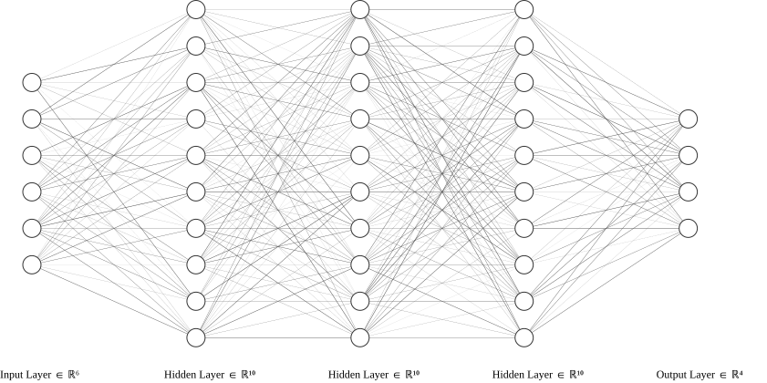
The point of deep learning is to sequentially produce better features, that are useful for solving some task (classification / regression / segmentation / etc)
We do this by pattern recognition, where patterns are provided by the training data
First layers typically look for general patterns, while last layers look for task-specific patterns
What are deep learning models doing
Recall we could write the output of our network (or any intermediate layer) as
\[ \small \hat{y} = f(\boldsymbol{x} | \boldsymbol{\theta}) \]
Where \(\boldsymbol{x}\) is the input data and \(\boldsymbol{\theta}\) are our (fixed) parameters
We are doing curve fitting.
What are deep learning models doing
Is my state-of-the-art LLM, capable of “reasoning” and “extended thinking” just a statistical tool?
Well, yes. LLMs have no neuroplasticity, the parameters \(\boldsymbol{\theta}\) are constant.
But: The transformer architecture is extremely effective at information storage and retrieval, and scales unreasonably well.
It won’t result in AGI, but is still remarkably useful.
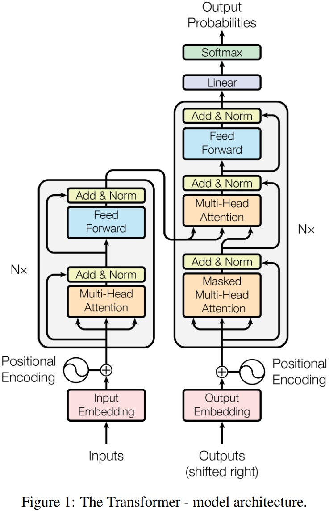
Deep learning and gradient descent
Training large-parameter models by gradient descent is efficient, but often the models end up very sensitive to small changes in input data
(which is why prompt engineering has become a thing)
Can exploit this in two ways:
- One for good: Explainability
- and one for bad: Adversarial attacks
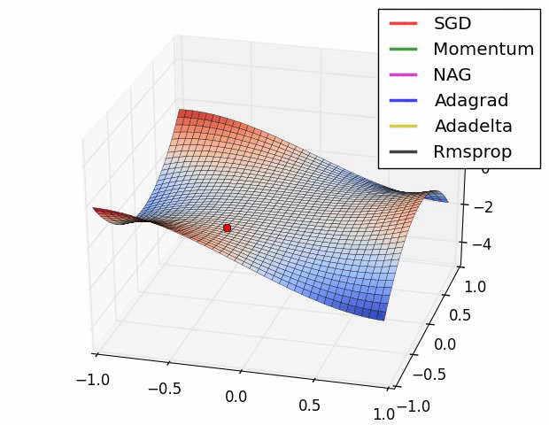
Recap: Optimisation with gradient descent
Question:
If we vary the parameters \(\boldsymbol{\theta}\) of model, how does it affect the predictions?
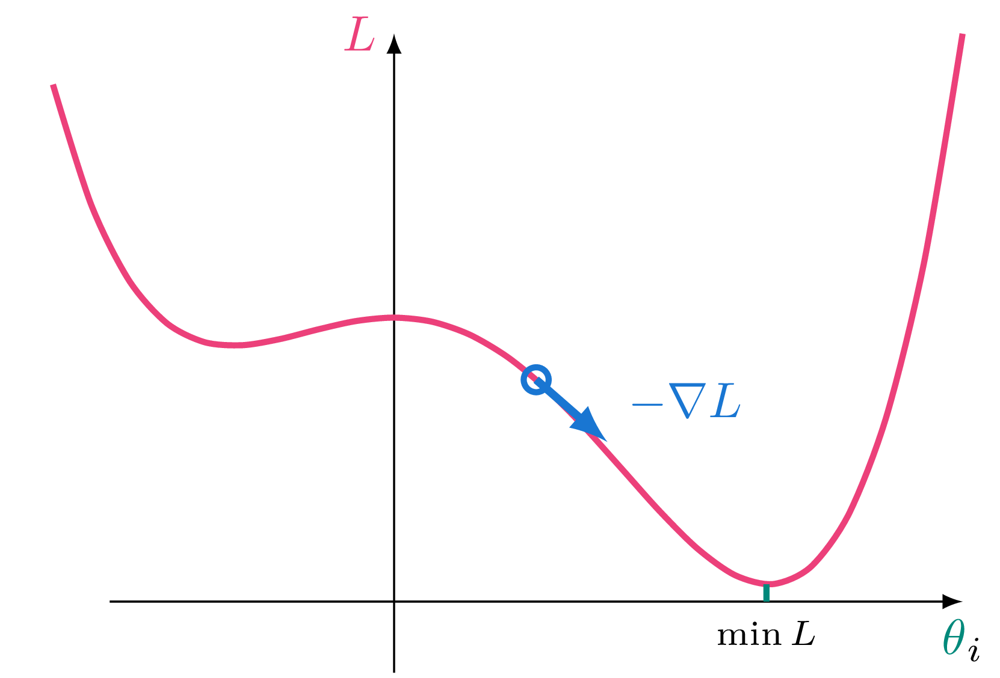
Quantify this by computing the gradient of the loss \(L\) with respect to the model parameters \(\boldsymbol{\theta}\):
\[ \nabla \color{MediumVioletRed}{L}(\color{teal}{\boldsymbol{\theta}}) = \begin{bmatrix} \frac{\partial \color{MediumVioletRed}{L}}{\partial \color{teal}{\theta}_0} \\ \vdots \\ \frac{\partial \color{MediumVioletRed}{L}}{\partial \color{teal}{\theta}_n} \\ \end{bmatrix} \]
Basically: Vary \(\theta\) check effect on \(L\)
Using gradients for explainability
Let’s turn it around and ask a different question:
If we vary the data \(\boldsymbol{x}\), how does it affect the prediction?
Can use this for per-datapoint explanations of model decision.
Compute then the gradient of the model output \(S\) with respect to input data \(x\).
Using gradients for explainability
Example:
For an image classifier we have two classes, cat and dog. Differentiating the score for cat, \(\small S_c\), with respect to the pixel values \(\small x_1, \dots, x_n\), gives an attribution of each pixels’ importance to the classification
\[ \small \nabla S_c (\boldsymbol{x}) = \begin{bmatrix} \frac{\partial \color{MediumVioletRed}{S_c}}{\partial \color{teal}{x}_0} \\ \vdots \\ \frac{\partial \color{MediumVioletRed}{S_c}}{\partial \color{teal}{x}_n} \\ \end{bmatrix} \leftarrow \mathrm{attribution\; map} \]
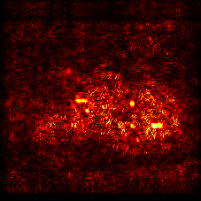
Using gradients for explainability
Some problems with using the (only) the gradient:
- Gradients looks rather noisy
- If using ReLU and output activations are 0, the gradient is also 0.
Some solutions:
- Add noise and average: SmoothGrad
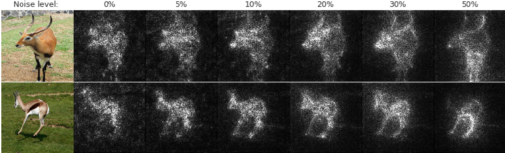
Using gradients for explainability
Some problems with using the (only) the gradient:
- Gradients looks rather noisy
- If using ReLU and output activations are 0, the gradient is also 0.
Some solutions:
Add noise and average: SmoothGrad
Make a baseline and integrate: Integrated gradients
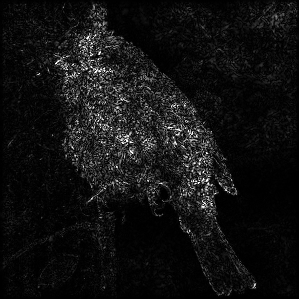
Using gradients for explainability
Some problems with using the (only) the gradient:
- Gradients looks rather noisy
- If using ReLU and output activations are 0, the gradient is also 0.
Some solutions:
- Be clever about how gradients are propagated through the activation functions: DeepLift, Deconvolution, Layerwise relevance propagation
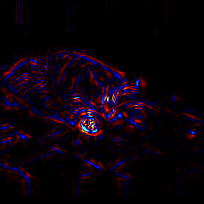
Adversarial attacks
Two observations from our pixel attributions:
- Gradients look noisy
- A few pixels have very large gradients
(and thereby a large impact on the classification)
Adversarial attacks
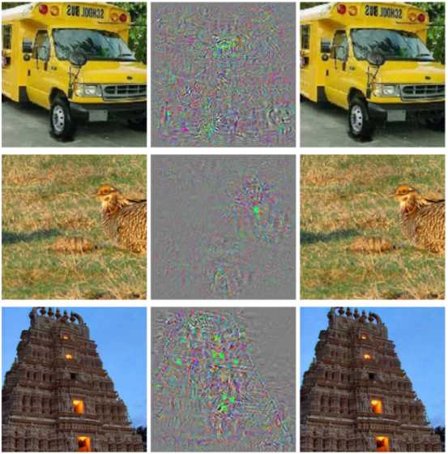
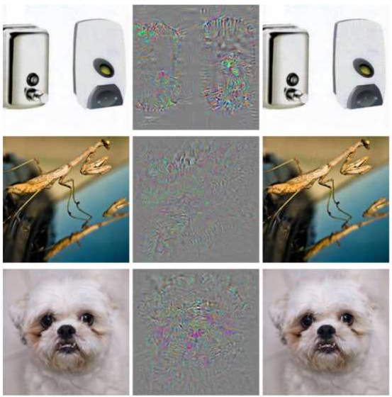
Original image
Perturbation
Perturbed image
Prediction
Ostrich
Ostrich
Ostrich
Ostrich
Ostrich
Ostrich
Constructing adversarial examples
From the gradient \(\nabla S_c\) we know which pixels were important to make the correct prediction
Adjust their values in the opposite direction
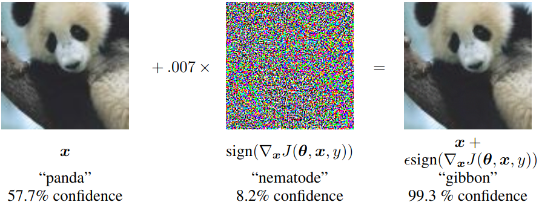
(Many sophisticated variants exist)
IRL adversarial examples
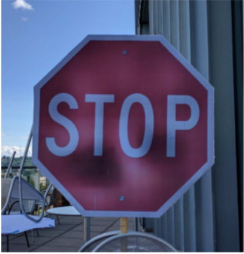
Speed limit 45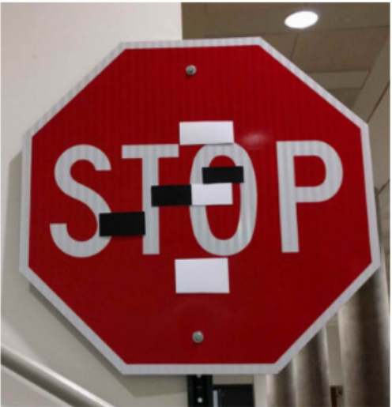
Speed limit 45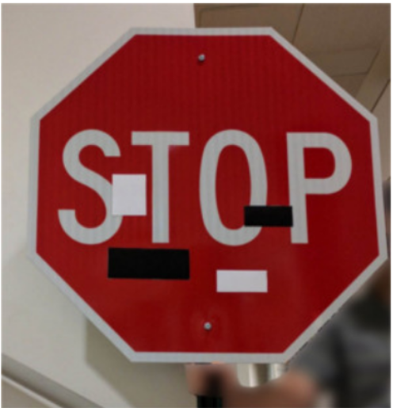
Speed limit 45Speed limit 45Adversarial attacks
Targeted attacks need access to the model on order to compute gradients
Black box attacks: Constructing adversarial examples purely by analysing outputs for given inputs (more difficult)
Some defense strategies:
- Training on adversarial examples
- Ensembling
- Augmentation
Generalisation
Over the course we have applied neural networks to many different specific tasks
If properly trained, the models work well (generalise) for new data.
But, naturally, they work only for instances represented in the training data
can call it local generalisation.
On the other hand, extreme generalisation would be if the model could solve new and unseen tasks.
Not only automate, but display intelligence.
A puzzle

Benchmarks
Benchmarks
Next week
Repetition and exam preparation
(see Canvas)